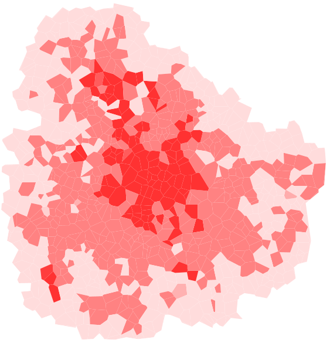
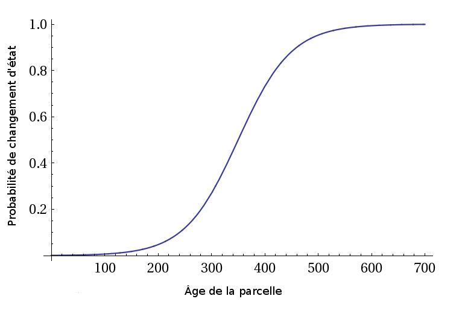

Morphogenèse urbaine
coévolution du réseau viaire et du bâti
Merwan Achibet
28 juin 2012

État de l'art
Automates cellulaires
Principe

Exemple : le jeu de la vie de Conway
Règles simples mais comportement complexe
Demo JS
Exemple géographique : la ségrégation de Schelling
DEMO JS
Dans le cadre des simulations urbaines
Une cellule représente un sous-espace géographique.
Une cellule dispose d'un état.
- Booléen (vide/construit)
- Type d'usage (résidentiel, commercial, industriel, ...)
Une cellule a un potentiel de transition vers tous les états.
- Déterministe
- Stochastique
Exemple 1 :
Blabla
Exemple 2 :
Blabla
Limitations des automates cellulaires
La rigidité de leur formalisme s'oppose à la fidélité des simulations.
- Discrétisation des états
- Synchronisme temporel
- Homogénéité et régularité
Relaxation de la régularité
David O'Sullivan propose l'utilisation d'automates
cellulaires graphes.

Autre limitation : les routes
- La connaissance du réseau routier essentielle
- Il est souvent fourni en entrée...
- ... Mais reste statique
- Inadapté à l'automate cellulaire
Simulations urbaines multi-agents
- Agents promoteurs : achètent, vendent, changent le
type
- Agents traceurs : raccordent les parcelles au réseau
routier
Simule à la fois la croissance du viaire et du bâti.
Défaut : pas de cohérence historique
- La configuration de départ est valide
- La configuration d'arrivée est valide
- Les configurations intermédiaires sont erronées


titre
- Agrandissement permanent du réseau viaire
- Règles empiriques appliquées (degré des carrefours tend
vers quatre, angle à 90, ...)
- Le trafic est simulé sur ces nouveaux segments par des
agents véhicules et piétons
- Les meilleurs sont conservés
titre
- Basées sur des règles empiriques
- Seul l'aspect visuel compte
- Domaines applicatifs: infographie, jeu vidéo,
cinéma
Méthodes procédurales
- Basées sur des règles empiriques
- Seul l'aspect visuel compte
- Domaines applicatifs: infographie, jeu vidéo,
cinéma
Exemple 1 : L-Systems
Exemple 2 : hyperstreamlines
Le modèle
Objectif du modèle
On propose un modèle de croissance urbaine :
- Reprenant le principe des automates cellulaires
- Gérant l'évolution conjointe du viaire et du bâti
- Reflétant l'irrégularité de la ville
- Garantissant la cohérence temporelle
Choix d'une structure adaptée
Elle doit :
- Partionner l'espace de façon irrégulière
- Créer des relations de voisinage par sa topologie
- Représenter à la fois le viaire et le bâti
Voronoï !
Définition
Applications
- Robotique et recherche de chemin
- Sociologie et étude de positionnement
- Sociologie et étude de positionnement
- Sociologie et étude de positionnement
Dans notre modèle
Que représente-on ?
- Cellule de Voronoï = parcelle
- Arête de Voronoï = route
- Sommet de Voronoï = carrefour
Et l'aspect cellulaire ?
- Cellule de Voronoï = cellule AC
- Relation de voisinage par adjacence

Potentialité
Deux types d'éléments
- Les construits : définitivement placés, forment la ville
- Les potentiels : intangibles, représentent une prévisions
Pourquoi ?


Principe du modèle
La croissance a deux composantes :
- verticale :
- horizontale :
Divisées en trois mécanismes
- Évolution des densités
- Placement des éléments potentiels
- Construction des éléments potentiels
Mécanisme 1: automate cellulaire
Trois types de densité :
- Faible (f)
- Moyenne (m)
- Élevée (e)
Une matrice d'affinité
MATRICE
EQUATION
EXEMPLE
Application à un automate cellulaire classique
DEMO JS
Problème
Deux défauts :
Amélioration : prendre en compte l'âge des parcelles.

Application à un automate cellulaire classique
DEMO JS
Application à un diagramme de Voronoï
VIDEO
Mécanisme 2: placement des éléments potentiels
- Mécanisme précédent: croissance verticale
- Celui-ci: croissance verticale
Idée principale: guider l'expansion de la ville.
On se concentre sur le placement des parcelles
potentielles.
La dynamique urbaine est axée autour des centres denses de
la ville
- La graine est placée sur un centre
- Elle se déplace en fonction de variables inhérentes à la
ville
- Sa vitesse varie
- Quand elle s'arrête, on place une parcelle
potentielle
ASPECT PHYSIQUE
Configuration étudiée

Champ de répulsion de la densité

Champ d'attraction des routes

Champ de répulsion des obstacles

Combinaison

Vitesse de la graine
Mécanisme 3 : construction des éléments potentiels
routes
parcelles
Tests
Difficulté à obtenir des données
Simulation de tests et quelques mesures
Le Havre
On utilise comme configuration initiale une sous-partie du
Havre.


Particularité notables
- Profil côtier empêchant le développement urbain
- Un centre densitaire
Démonstration
VIDEO
Superficie

Superficie par type de densité

Diamètre

Degré des carrefours

Degré des carrefours en fonction de la distance

Constat
Conclusion
Bien
Pas bien
Ouverture
Questions